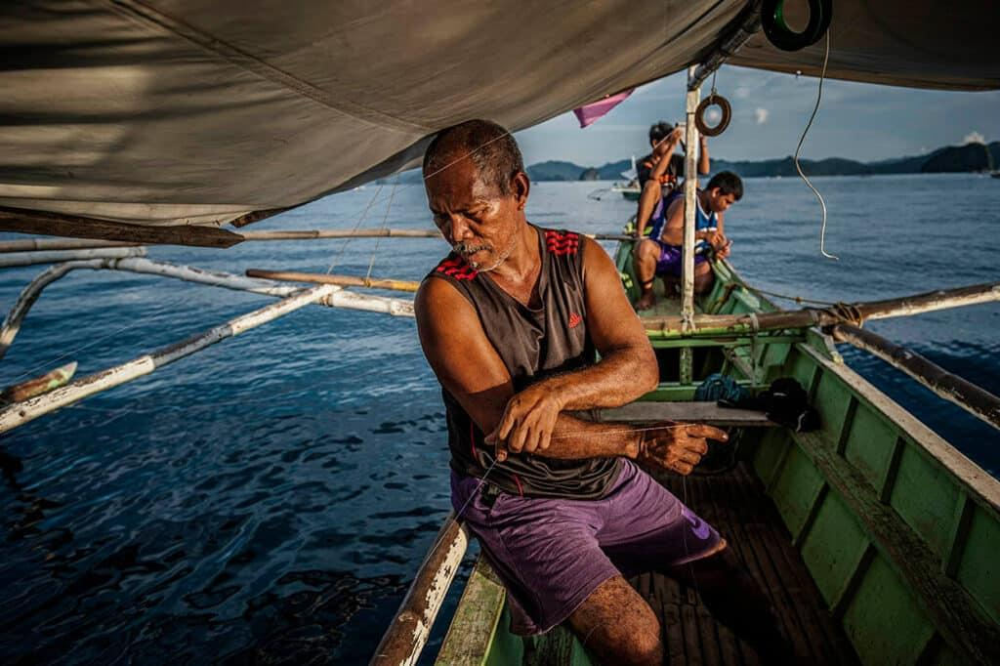
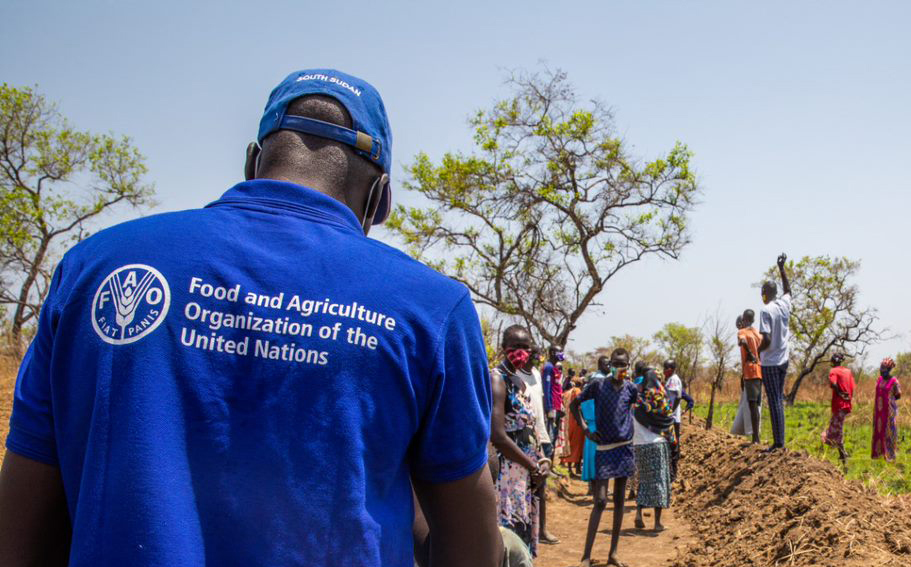
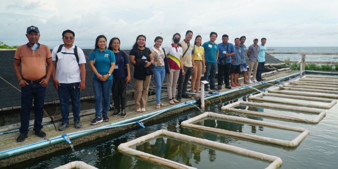
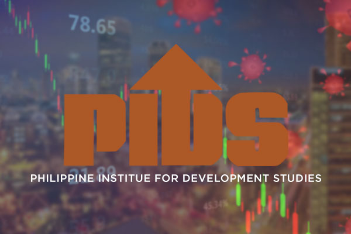
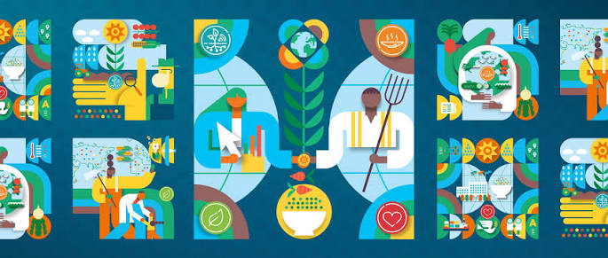
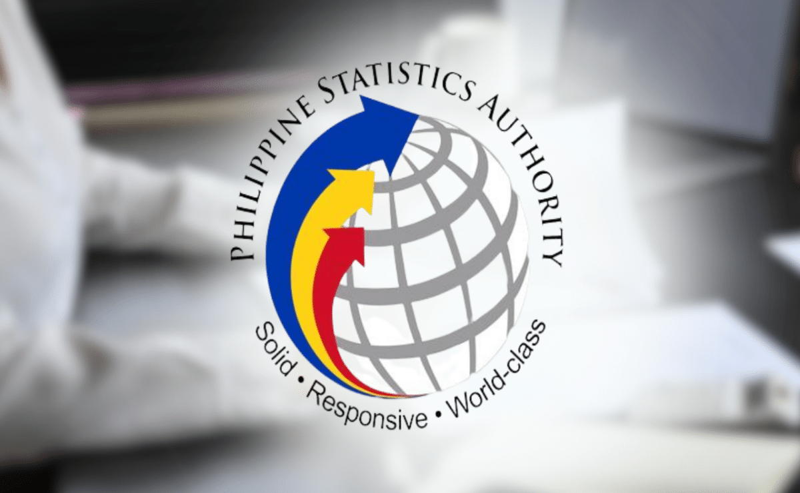

We are BSIT 1109 from Batangas State University – The National Engineering University, Alangilan Campus. This website was created as part of our Introduction to Computing (ITC) subject to present and share knowledge about Philippine Agriculture and Fisheries.
Through this project, we aim to provide accessible information about the history, importance, major products, and challenges of these industries. We also aim to apply the knowledge and skills we have gained in computing, particularly in web development, research, and information presentation.


As Group 3, we hope that this website will help readers appreciate the importance of agriculture and fisheries in the Philippines while showcasing our creativity, teamwork, and learning as first-year BSIT students.




